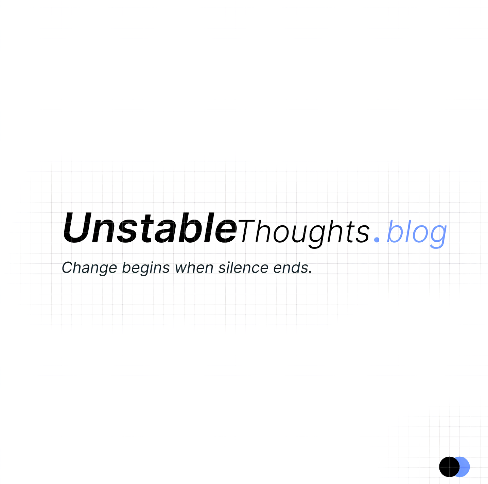

The straightforward answer is this: our mainstream system is not doing the job it is supposed to do. The responsibilities that should have been fulfilled are being neglected. As a result, our people [Indians] are suffering silently.
Every day, we see tragic incidents that could have been prevented.
For example [some newses], people die while walking on footpaths after being hit by reckless drivers. In many cases, wealthy or influential individuals escape without serious consequences, getting easily bailed out without accountability.
People lose their lives when bridges collapse due to poor construction and lack of maintenance. Hospitals are burned in violent incidents, and even newborn babies are killed. These are not accidents alone - they are failures of systems.
From 2020 to 2024, thousands [Reported number - 9483] of people have reportedly died due to pothole-related accidents. Roads meant for safe travel turn into death traps because of negligence.
There are even heartbreaking cases where a two-month-old baby was killed for entering a temple due to caste discrimination. In a country that speaks of unity and progress, such incidents expose deep-rooted social problems that still remain unresolved.
At this point, we don't need a missile attack from another country to destroy us. Our silence, our inaction, and our tolerance of injustice are enough to weaken us from within.
Meanwhile, leaders celebrate not being attacked by external forces, while internal issues continue to claim innocent lives.
So the real question is:
Why don't people protest or raise their voices against these problems?
Why do we normalize injustice?
Why do we move on so quickly after every tragedy?
This platform exists for a reason. It exists to ask difficult questions, to speak about uncomfortable truths, and to encourage people to think, question, and demand accountability.
Change begins when silence ends. And this is where we choose to begin.